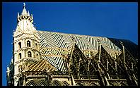
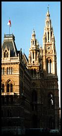

A decent traditional cafe is just what I fancied for lunch today, especially since I missed breakfast. The crowd in here is suitably varied, although quite old. There's just the right amount of chatter and bustle, which is quite diverting. My grilled trout, with potatoes and vegetables but no frills, cost AS160 with a glass of wine. Reasonable value, but not really cheap.
 This place reminds me of those Parisian bistros that haven't changed for a century, but with more cheerful service. I was warned that I should expect far ruder waiters than in Paris, but I haven't seen it yet. I have only met really friendly Austrians so far. Only one thing spoilt this place - they do not take credit cards, which turns out to be fairly common in Vienna.
Zum Leupold, Mölker-BasteiThis is perhaps the closest thing to a British city pub that I've seen since I got here. I'd have a pint, as they have a good selection of beer, but it's not even three o'clock yet and I probably shouldn't start this early. I might come back here in the evening, although it could prove rather average.
Cafe Diglas, WollzeileHere's another one of those big, pricey, shiny, smart places - I'm getting used to the style now. They've even brought our drinks on individual metal trays. What with the gold rims on the cups, this all looks very attractive on the marble table.
I have managed to resist all of the cakes on offer, and have compromised with a hot chocolate. It's good, but could do with less sugar and more chocolate.
The service is surprisingly friendly, given the style of the place. Not only has the waiter resisted any temptation towards arrogance, he even brought us another glass of tap water each, after we hadn't ordered anything for half an hour.
 Titanic, TheobaldgasseIt's all dark orange! Well, the walls, doors and ceiling at least. I like these bars that are a cross between a restaurant and a pub, with good atmosphere and good music, together with white table cloths and good food. It's odd, but I'm getting to like the idea.
Even better, there's a dance floor downstairs, in what is essentially a night club, but with free entry.
Titanic is predictably and deservedly popular, despite the fact that it's a little out of the way of the city centre, and almost invisible from the street.
Pizzeria Valentino, Berggasse, 6 (1090)Good fresh pasta, big pizzas for not too much money and proximity to the university make this popular with students.
As I ordered some tortellini, which I like a lot, it occurred to me that going to an Italian restaurant when you're overseas is as much of a cultural and culinary cop out as going to a McDonalds in Paris, say. At least it's food, though, even if it is the easy option.
{kind=link}
{kind=link}